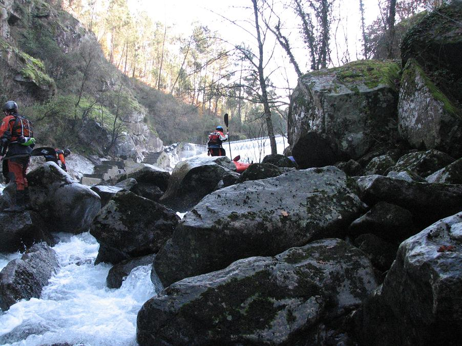
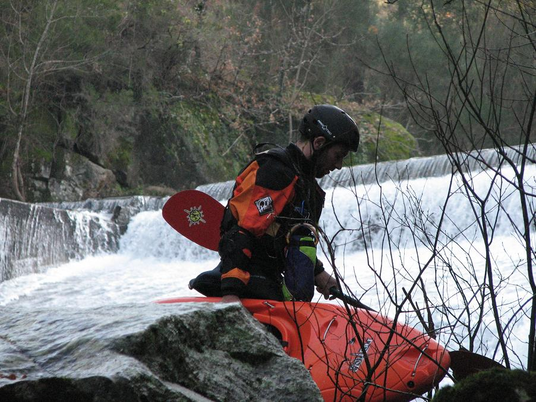
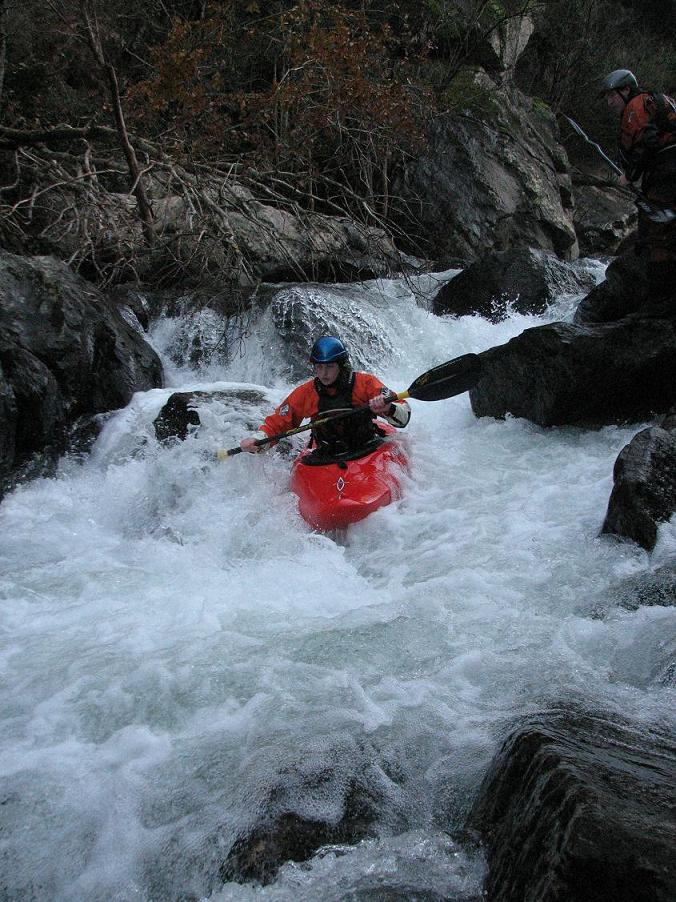
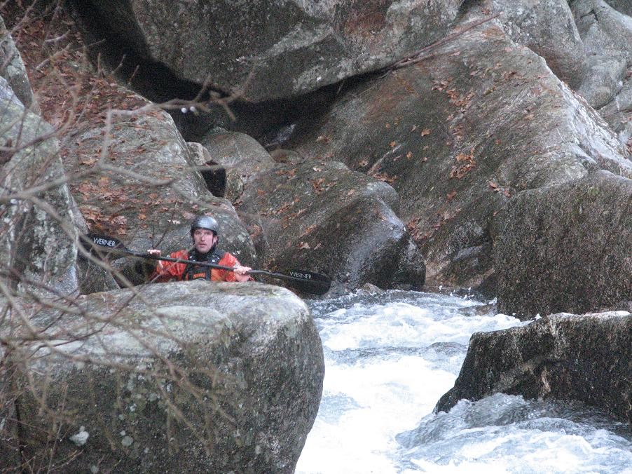
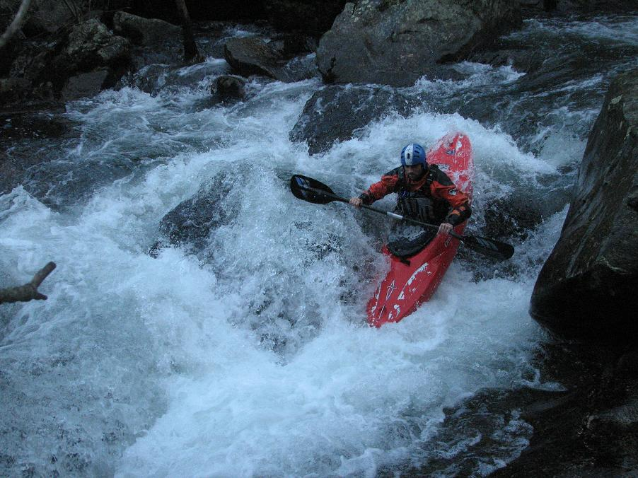
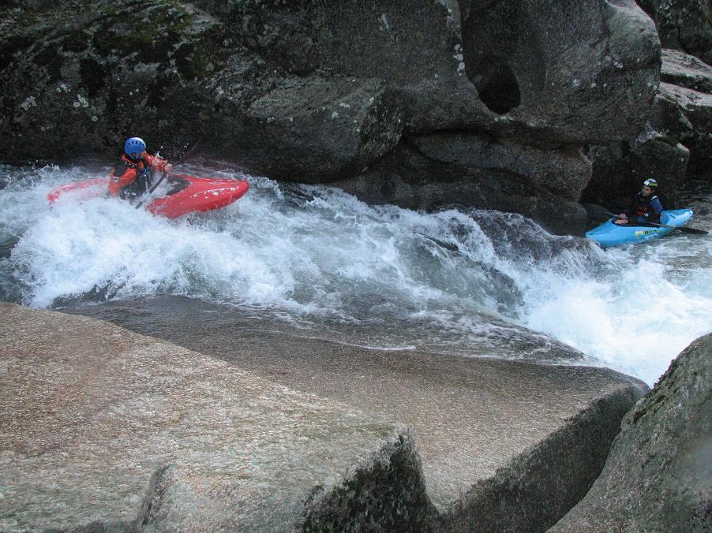
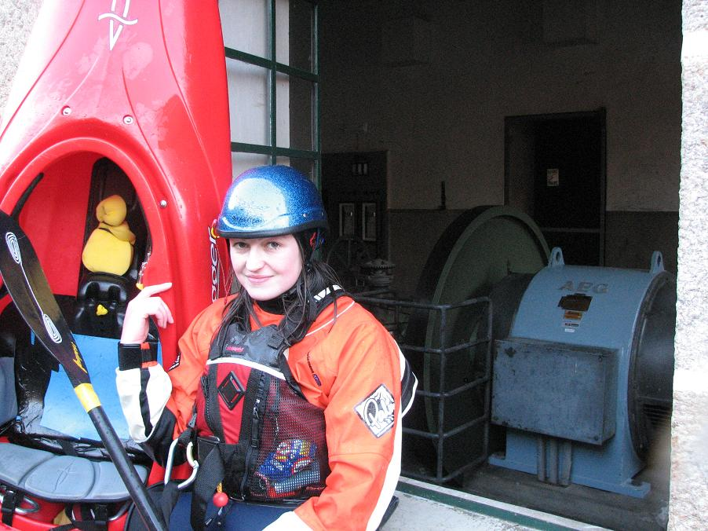
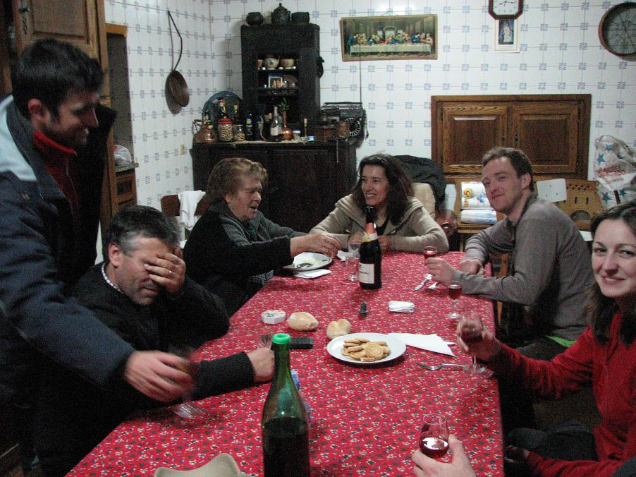
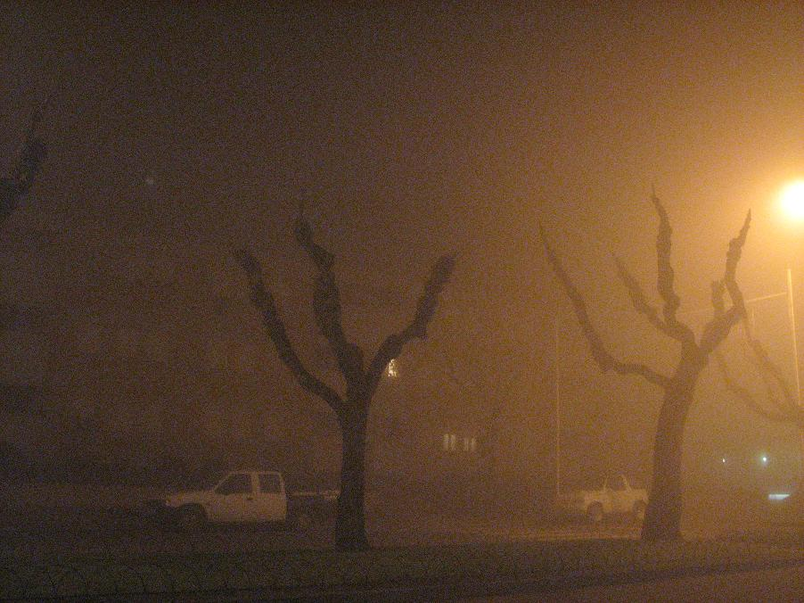

Mondim de Basto - Louredo - Rabi�o's Grandmother
‘La indecisión es la llave a la
flexibilidad’
|
|
Mondim de Basto - Louredo - Rabi�o's Grandmother |
||
|---|---|---|---|---|
|
‘La indecisión es la llave a la
flexibilidad’ |
Mondim do Basto
Jorge Jorge gave us the low-down on low-water levels further north in Galicia and advised that we head south to a new base in Mondim do Basto. He hooked us up telephonically with another Jorge (Jorge Rabi�o), whom we met parked on a roundabout enroute to the Louredo. Him being parked on a roundabout was our first clue to the man's idiosyncratic approach to driving.
He was in good company on this trip, with Jim bursting a tyre on the trusty Micra, Ferg's rally-car mentality inducing vomiting in Mr. Fred, and Rob J. treating every car like his 2.0 litre diesel monster (that is to say, very badly).
Louredo
Onwards to the Louredo, which was another boulder-strewn, low-water fun river. Lots of portages, as you can see...

The dam is runnable is higher water, but with a judicious choice of line. On this day, local rafting company owner Rafael shows the way. Rafael is another useful contact - you can find him through clubdopaiva.com.

Back on the water, Catherine gets things moving again.

Coffey waits...

This is the other Jorge, known as Rabi�o, another Portuguese paddler with flexible work arrangements who is happy to go boating mid-week with a bunch of strangers. His Portuguese kayaking blog is at www.aquavertical.blogspot.com.

We would have been lost without these guys - Portugal is a maze of little roads, so just finding the rivers was tricky. The water levels are mysterious, so knowing if the rivers are even running would have been potluck. This aspect of Portugal reminded me of Ecuador, where some of the rivers are only good to go when they look too low and some are too high if they look good to go. So it's fantastic to have local knowledge.
More granite slides with a variety of runnable lines - boof left, plug the hole, or slide right.

The take-out is at a hydro power station. This is a common occurrence in Portugal, which generates one-third of its electricity by damming the rivers. The damming of rivers for hydroelectricity brings up mixed feelings in a kayaker. Yes, everybody needs electricity and hydrogeneration is cheap and non-polluting, but you can't help wondering what you're missing. On other trips, we've paddled sections of rivers that were in the process of being dammed. Breaking out to get the attention of the driver of a mechanical digger in mid-river for a signal to pass without getting hit by his bucket is one memory. So is paddling away knowing you'll be one of the last people to paddle these rapids.
Some kayakers are more conflicted that others - this one works for the electricity company. She loves those big turbines, she loves those rapids.

Social Call
Afterwards we paid a social call to Rabi�o's grandmother and had a glass of the local tipple - port. Covering his eyes is the uncle, who was setting out the next morning to drive to Switzerland. There's high unemployment in Portugal, so lots of Portuguese live and work in France and Switzerland, making a good living for themselves there and travelling home when they can. You see lots of Swiss-registered Mercedes in rural Portugal and everyone speaks French, much more so than the numbers speaking Spanish.

This is the main street of Mondim do Basto, our base for the coming days, in the evening fog.
